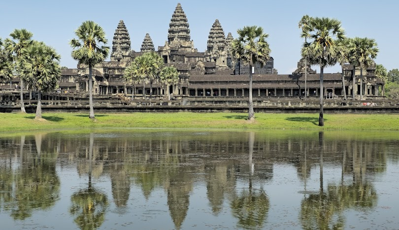

អំពីខេត្តសៀមរាប
ខេត្តសៀមរាប ស្ថិតនៅភាគពាយ័ព្យនៃព្រះរាជាណាចក្រកម្ពុជា និងជាខេត្តមួយដែលមានភាពល្បីល្បាញបំផុត ដោយសារតែជាទីតាំងនៃប្រាសាទអង្គរវត្ត ដែលជាសម្បត្តិបេតិកភណ្ឌពិភពលោករបស់អង្គការយូណេស្កូ។ ខេត្តនេះជាគោលដៅទេសចរណ៍ដ៏សំខាន់ ដែលទាក់ទាញភ្ញៀវទេសចររាប់លាននាក់ជារៀងរាល់ឆ្នាំ។
ប្រវត្តិសង្ខេប
សៀមរាបមានប្រវត្តិយូរលង់ជាប់ទាក់ទងនឹងអាណាចក្រខ្មែរបុរាណ។ ក្នុងសម័យអង្គរ តំបន់នេះជាមជ្ឈមណ្ឌលនយោបាយ សេដ្ឋកិច្ច និងសាសនាដ៏ធំរបស់អាណាចក្រខ្មែរ។ សព្វថ្ងៃ ខេត្តសៀមរាបបានក្លាយជាទីក្រុងទេសចរណ៍ដ៏សំខាន់ ដែលរួមបញ្ចូលទាំងវប្បធម៌ ប្រវត្តិសាស្ត្រ និងការអភិវឌ្ឍទំនើប។
កន្លែងទេសចរណ៍សំខាន់ៗ
- ប្រាសាទអង្គរវត្ត
- ប្រាសាទបាយ័ន
- ប្រាសាទតាព្រហ្ម
- ភ្នំគូលែន
- បឹងទន្លេសាប (កំពង់ភ្លុក)
- ផ្សារចាស់ និងផាប់ស្ទ្រីត (Pub Street)
ទីតាំងភូមិសាស្ត្រ
ខេត្តសៀមរាបស្ថិតនៅភាគពាយ័ព្យនៃប្រទេសកម្ពុជា មានព្រំប្រទល់ជាប់ខេត្តបន្ទាយមានជ័យ ខេត្តឧត្តរមានជ័យ ខេត្តព្រះវិហារ និងបឹងទន្លេសាប។ ខេត្តនេះមានអាកាសធាតុបែបត្រូពិច និងសម្បូរទៅដោយធនធានវប្បធម៌ ប្រវត្តិសាស្ត្រ និងធម្មជាតិ ដែលជាមូលដ្ឋានសម្រាប់វិស័យទេសចរណ៍របស់កម្ពុជា។